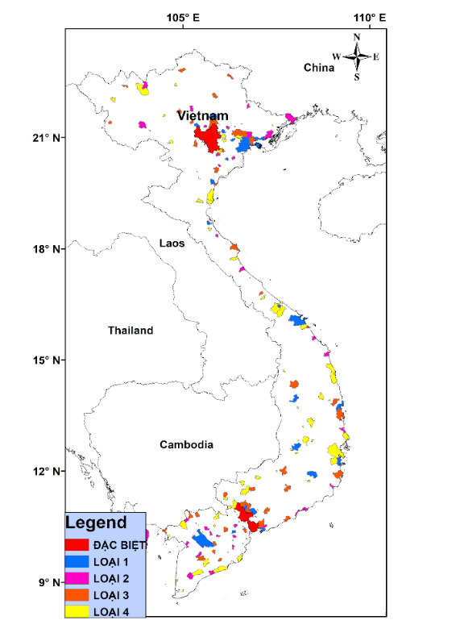

Với tốc độ đô thị hóa nhanh chóng cùng với nền kinh tế đang phát triển đã đóng góp vào hiện trạng ô nhiễm không khí PM2.5 nghiêm trọng ở Việt Nam
Bản đồ PM 2.5 theo trọng số dân năm 2019
Bản đồ PM 2.5 theo trọng số dân năm 2020
Đô thị mức càng cao thì càng có khả năng bị ô nhiễm PM 2.5
Giữa quy mô đô thị và nồng độ bụi PM2,5 không khí có mối quan hệ tỉ lệ thuận với nhau (Hình 7). Mức độ đô thị càng tăng thì tỉ lệ PM2,5 vượt ngưỡng QCVN (25 ug/m3) càng tăng. Trong năm 2020, Hà Nội và Hồ Chí Minh đều có nồng độ bụi PM2,5 cao hơn ngưỡng QCVN (Tỉ lệ đạt 100%). Tỉ lệ này giảm lần lượt đạt 36,4%, 15,6%, 29,2%, 12,1% tương ứng với đô thị lại 1, 2, 3, 4. Ngoài ra có thể thấy đô thị loại 3 có tỉ lệ vượt ngưỡng cao hơn đô thị loại 2, điều này có thể lý giải do phân bố của các đô thị loại 3 tập trung nhiều vùng ĐB sông Hồng và xung quanh TP. Hồ Chí Minh (Hình 6), là những vùng có mức độ ô nhiễm cao, do đó có nhiều đô thị loại 3 vượt ngưỡng QCVN.
Bản đồ phân bố đô thị Việt Nam
Tỉ lệ đô thị theo mức có nồng độ PM 2.5 vượt ngưỡng QCVN

Bản đồ PM 2.5 theo trọng số dân 2020
Nồng độ bụi PM2,5 tại các tỉnh thành miền Trung trong năm 2020 nhìn chung là tương đối thấp, biến thiên từ 11,47 đến 25,49 µg/m3. Với điều kiện tự nhiên ở khu vực này là địa hình dài và hẹp, phía Tây chủ yếu là đồi núi có ít cư dân sinh sống, phía Đông là đồng bằng ven biển tập trung dân cư và giao thông phát triển, do đó ô nhiễm bụi tập trung chủ yếu ở vùng ven biển. Khu vực Bắc Trung Bộ có nồng độ PM2,5 tại các tỉnh thành dao động từ 14,32 đến 25,5 µg/m3. Nồng độ bụi PM2,5 ở các tỉnh tiếp giáp khu vực phía Bắc như Thanh Hóa (25,5 µg/m3), Nghệ An (24,11 µg/m3), Hà Tĩnh (21,7 µg/m3) có xu hướng cao hơn. Khu vực Nam Trung Bộ có nồng độ PM2,5 trong dải từ 13,02 đến 17,44 µg/m3, thấp hơn so với khu vực Bắc Trung Bộ. Điều này có thể lý giải do khu vực này ít tập trung các nhà máy công nghiệp (Hình 39). Tây Nguyên có địa hình cao nguyên, tỉ lệ đất rừng cao nên nồng độ bụi PM2,5 cũng đạt mức thấp, dao động từ 11,4 đến 14,34 µg/m3.
Bản đồ thể hiện nồng độ PM 2.5 trên trọng số dân cư các tỉnh phía Bắc
Rê chuột vào các tỉnh để biết thêm chi tiết
Nồng độ bụi PM2,5 trung bình năm 2020 tại các trạm ở miền Trung được biểu diễn trong Hình 13 với 5/12 trạm đo vượt chuẩn. Cao nhất tại trạm Phú Xuân University (Hà Tĩnh), trạm này nằm trong trường học để khảo sát lượng phát thải vào giờ tan học và thấp nhất tại trạm FPT Complex, Đà Nẵng (12,19 µg/m3). Các trạm vượt chuẩn thuộc khu vực Bắc Trung Bộ, là khu vực tập trung nhiều nhà máy nhất ở miền Trung, các trạm chưa vượt chuẩn tập trung chủ yếu ở khu vực Tây Nguyên và Nam Trung Bộ, kết quả này tương đồng với dữ liệu bản đồ
Bản đồ thể hiện phân bố và nồng độ PM 2.5 trung bình năm của các trạm đo ở miền Trung
Click vào các ô vuông màu để ẩn/hiện các trạm đo. Rê chuột vào các chấm tròn trên bản đồ để biến thêm thông tin các trạm